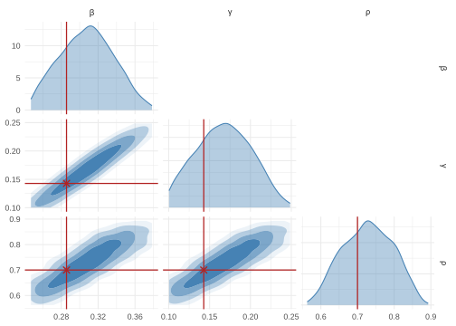
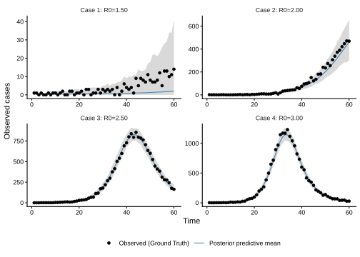

neuralsbi implements neural simulation-based inference (SBI) methods directly in R. Given a prior over parameters and a simulator, it trains a neural network to approximate the Bayesian posterior p(theta | x). The neural density estimators for posterior estimation (mixture density networks, masked autoregressive flows, neural spline flows) run directly on the torch R package (libtorch). You don’t need python or Julia to use neuralsbi.
Installation
# install.packages("remotes")
remotes::install_github("pedroliman/neuralsbi")
# the neural back end (once)
install.packages("torch")
torch::install_torch()Usage
All you need to provide neuralsbi is a simulator that takes a vector of parameters, other inputs it needs and returns a vector of outcomes. Unlike in stan where you need to provide a likelihood function, here you only need to simulate your data generation process.
In this example, we create an SIR model, where only a fraction rho of cases is observed. Parameters to be fit are beta and gamma. We know in this example that the quantity that is better identified by the model is R0 = beta / gamma, but that is fine. In a real-world application, we would constrain gamma given external information.
Define your simulator:
library(neuralsbi)
library(deSolve) # install.packages("deSolve")
library(future)
library(dplyr)
library(ggplot2)
# Set up ------------------------------------------------------------------
# An SIR ODE:
ode_model <- function(t, y, p) {
with(as.list(c(y, p)), {
dS <- -beta * S * I / N
dI <- beta * S * I / N - gamma * I
dCumInfections <- beta * S * I / N
list(c(dS, dI, dCumInfections))
})
}
# Simulator function
# Here we are already only making the simulator return only 10 observations
my_simulator <- function(theta, times = 0:60, N = 100000, I0 = 5) {
# Let's use just a deterministic ODE, so there's no randomness in transmission:
# WE could make it fully stochastic if we want.
# I just want to make this as fast as it can be for this vignette build
ode_result <- ode(y = c(S = N - I0, I = I0, CumInfections = 0),
times = times,
func = ode_model,
parms = c(beta = theta[["beta"]],
gamma = theta[["gamma"]],
N = N))
cases <- round(diff(ode_result[, "CumInfections"]))
obs_cases <- rbinom(n = length(cases), size= cases, prob = theta[["rho"]])
# return output vector
return(obs_cases)
}
# test simulator, returns a time-series of two months of data
my_simulator(theta=c(beta = 0.5, gamma = 1/7, rho = 0.5))
#> [1] 0 3 3 4 5 9 11 20 26 39 51 79 110 163 229
#> [16] 293 397 578 831 1137 1495 1914 2530 2926 3388 3752 3806 3703 3515 3062
#> [31] 2639 2197 1793 1427 1133 894 716 591 498 376 349 258 210 185 142
#> [46] 136 107 92 76 72 62 44 49 38 23 27 29 18 15 17Train your neural posterior estimator
Now we train our neural posterior estimator with the npe function. We need just a prior over which we will train the model. It takes about a minute to train it with 5,000 runs, which is a modest simulation budget.
# Set up our priors
prior <- prior_uniform(low = c(beta = 0.1, gamma = 1/10, rho = 0.1),
high = c(beta = 0.7, gamma = 1/4, rho = 0.9))
# Set up parallel simulations:
plan(multisession, workers = 8)
# Observation times: the simulator returns I at these points.
times <- 0:60
sim_args <- list(times = times, N = 100000, I0 = 5)
# Here we fit the neural posterior estimator with neuralsbi's npe function:
fit <- npe(prior, my_simulator, n_simulations = 5000, sim_args = sim_args, seed = 1)
fit
#> <nsbi_npe> Neural Posterior Estimation fit
#> density estimator : maf
#> parameters (dim) : 3
#> names : beta, gamma, rho
#> data (dim) : 60
#> simulations : 5000
#> best val loss : -2.4076
#> -> build a posterior with posterior(fit, x_obs = ...)Looks like it works. We don’t know if it is any good yet, let’s see!
Condition on your data to get a posterior distribution
Now, let’s create some data with the model. Let’s say there’s an outbreak that looks like COVID-19, with R0 = 2.5 and a recovery rate gamma = 1/7. Note that our neural posterior estimator hasn’t seen any data yet. We get a posterior by calling the posterior function on our npe and giving it a data vector. The posterior call is fast.
true_r0 = 2
true_gamma = 1/7
true_params <- c(beta = true_r0 * true_gamma, gamma = true_gamma, rho = 0.7)
# Make some data (or read in your data)
y_obs <- my_simulator(true_params, times = times, N = 100000, I0 = 5)
# Get posterior - this is instantaneous.
post <- posterior(fit, x_obs = y_obs)
post_draws <- sample(post, 1000)
pairplot(post_draws, true_params)
Our posterior distribution covers our ground-truth value. We knew that the SIR model posterior was a ridge; no surprises there. We can still get some identification from this data; that’s nice.
Posterior Predictive Distribution
Now, what if R0 was lower, or higher? Does this machinery still work? Also, how do you fit the model to multiple data sets, like multiple cities?
Thanks to neural poesterior estimation, that is no problem. We can just condition again on new data and get a new posterior. Let’s do that on a loop for a few values of R0 and do a posterior predictive distribution test. If everything is working we should be able to estimate the model anywhere in the parameter space that we used as a prior.
# Set gamma fixed and let beta vary
set.seed(42)
R0s <- c(1.5, 2, 2.5, 3)
gamma <- rep(1/7,4)
beta <- R0s * gamma
rho <- rep(0.2, 4)
theta_grid <- matrix(data = c(beta, gamma, rho), nrow = 4, dimnames = list(1:4, c("beta", "gamma", "rho")))
# For each drawn theta: simulate an observation, condition the (single) fit on
# it, then build a posterior-predictive band. Everything reuses `fit`.
pp_summary <- do.call(rbind, lapply(seq_len(nrow(theta_grid)), function(i) {
theta_i <- theta_grid[i, ]
R0_i <- R0s[i]
y_obs <- my_simulator(theta_i, times = times, N = 100000, I0 = 5)
post <- posterior(fit, x_obs = y_obs)
pp <- posterior_predictive(post, my_simulator, 1000)
data.frame(
obs_id = sprintf("Case %d: R0=%.2f",
i, R0_i),
time = times[-1],
mean = colMeans(pp),
lower = apply(pp, 2, quantile, probs = 0.005),
upper = apply(pp, 2, quantile, probs = 0.995),
obs = y_obs
)
}))
# Posterior predictive plot
pp_plot <- ggplot(pp_summary, aes(x = time)) +
geom_ribbon(aes(ymin = lower, ymax = upper, fill = "Posterior predictive 90%"),
alpha = 0.3) +
geom_line(aes(y = mean, colour = "Posterior predictive mean")) +
geom_point(aes(y = obs, colour = "Observed (Ground Truth)")) +
facet_wrap(~ obs_id, nrow = 2, ncol = 2, scales = "free_y", axes = "all") +
scale_colour_manual(values = c("Observed (Ground Truth)" = "black",
"Posterior predictive mean" = "steelblue")) +
scale_fill_manual(values = c("Posterior predictive 99%" = "steelblue")) +
labs(x = "Time", y = "Observed cases", colour = NULL, fill = NULL) +
theme_classic() +
theme(legend.position = "bottom", strip.background = element_blank())
pp_plot
#> Warning: No shared levels found between `names(values)` of the manual scale and the
#> data's fill values.
#> No shared levels found between `names(values)` of the manual scale and the
#> data's fill values.
Note we didn’t have to re-run the estimation process to do this. We just needed to call post <- posterior(fit, x_obs = y_obs) then get our posterior predictive distribution with posterior_predictive(post, my_simulator, 1000).
Isn’t neural SBI awesome? Go tell your friends that neural simulation-based inference is awesome.
Learn more
The package website has some more documentation.